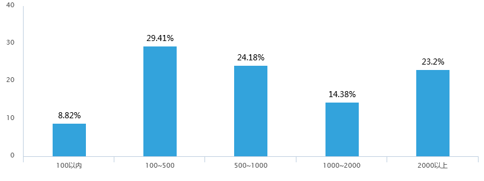
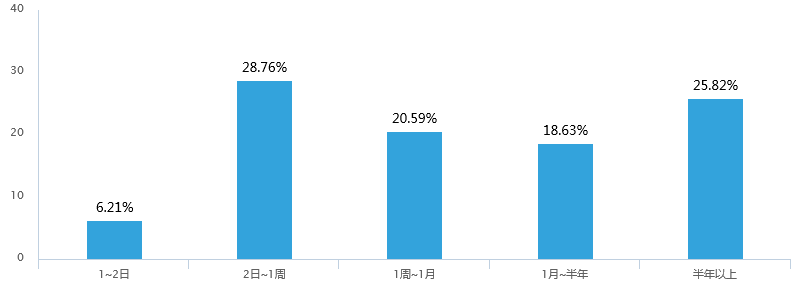

Shanghaitech_B’s Survey Report
1 Introduction
We Shanghaitech_B team are currently focusing on modified bacteria which treat IBD(Inflammatory Bowel Disease) by secretion of EGF(Epidermal Growth Factor).
With the project processing, it turns out surprisingly that our team members are quite unfamiliar with such intestinal diseases while most of us suffer from them at times. Inspired by this phenomenon, we decide to conduct a survey in the interest of knowing people’s cognition in intestinal diseases, meanwhile propagating our project.
2 Research Design
2.1 Contents
This survey consists of three major parts: intestinal diseases, gut flora and synthetic biology. As people know life-related diseases, i.e. intestinal tract diseases, better than merely intestinal diseases, the survey is needed to start from a boarder aspect and be narrowed to intestinal diseases.
2.2 Participants
363 shares of answers are received, with 81.82% of which have no idea about iGEM. People above 40 years old contribute to 46.55% of all answers and people from 26~40 take up 15.43%. People below 26 account for 15.43%. Participants come from all walks of life, with only 36.36% of them being students.
3 Results
In the first part we investigate people’s cognition in intestinal diseases. People believe that cancer and aids are most severe. Heart attack ranked the second, followed by Parkinson’s disease and Alzheimer disease. Then the pneumonia. Intestinal tract diseases is among the least severe common diseases, as expected [1]. However, 84.3% of participants have witnessed the suffering of intestinal tract diseases [2], with the cost of treatment covers a long range. 8.82% cost below ¥100, 29.41% 100~500, 24.18% 500~1000, 23.2% beyond 2000 [3]. Only 6.21% participants claim that 1~2 days are needed to cure the disease, while different people suffer from various intestinal tract diseases, with the time required to cure ranging from days to more than half a year [4]. Furthermore, 50% people get the diseases once or twice, while the rest suffer more often [5]. Among all the intestinal tract diseases, diarrhea, bellyache and stomachache are the most common ones [6]. In this part of survey, we mixes intestinal diseases and tract diseases intentionally, and we are surprised to see that only 50.69% of participants can distinguish one from another [7]. However, people know about detailed intestinal diseases, i.e. 70.6% heard about IBD [8]. They also know about common treatments of these diseases. 60.44% know about dietotherapy, 66.21% know the Chinese traditional treatment. Medicine and operation are the most known. 26.37% are conscious of fecal bacteria transplantation [9], along with the strict test it needs to run, which could be considered a disadvantage. The other advantages of tradition treatments mentioned by participants are pain(58.52%), Immune system disorder(53.57%), drug allergy(52.2%) and others(i.e. slow effect) [10]. 64.19% of participants never came into contact with any propaganda or advertisement on intestinal diseases [11], and most (95.87%) of them feel it important to strengthen people’s understandings of intestinal diseases [12].
In the second part we ask about gut flora. Most of participants believe the relationship between gut flora and intestinal to be symbiotic [14]. Nearly all of them heard about Escherichia coli, while 49.18% knows Enterococcus faecalis [13].
In the third part we start propagating our project [15] [16] and gain feedbacks [17] [18] [19].